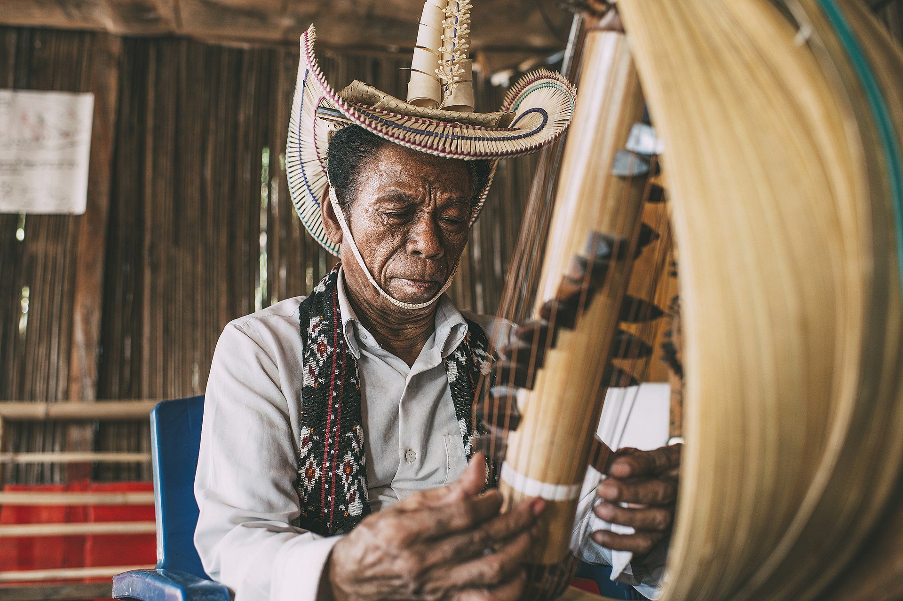
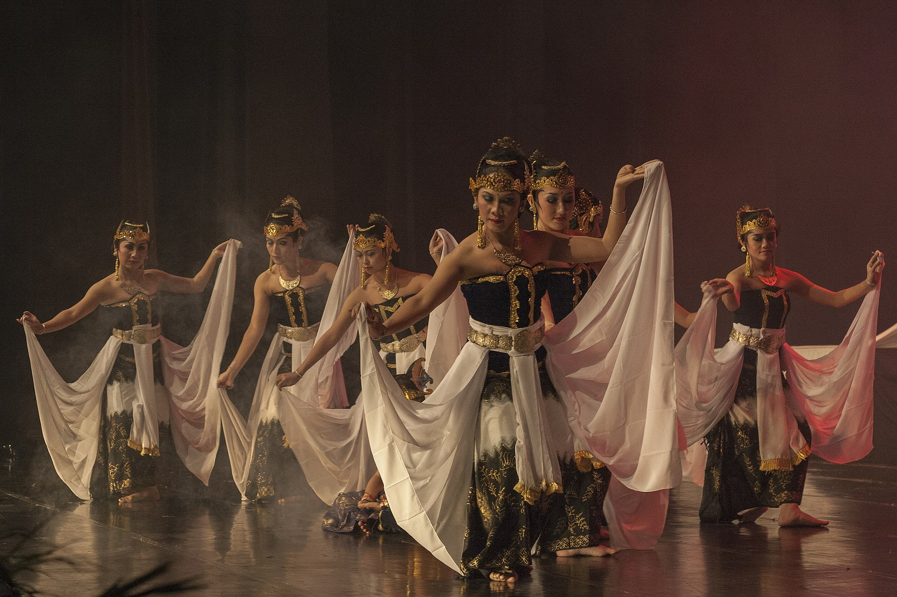
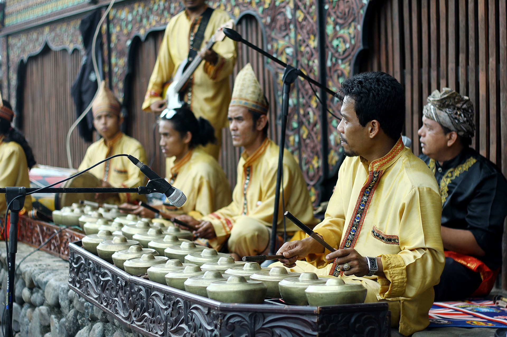
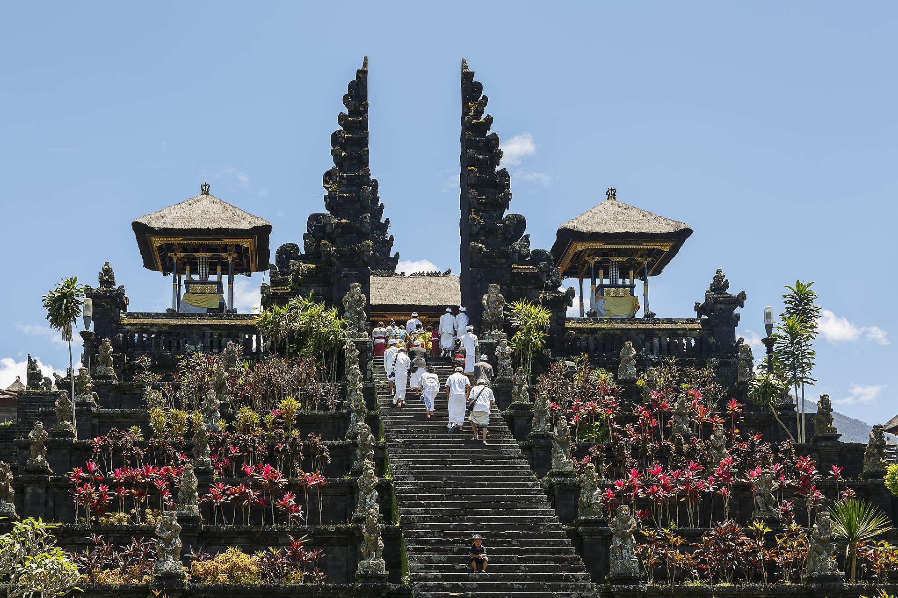
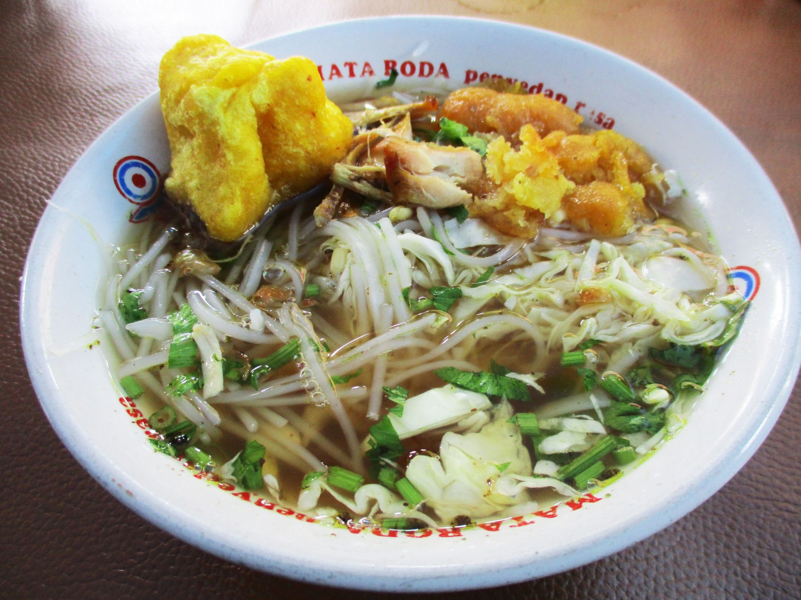
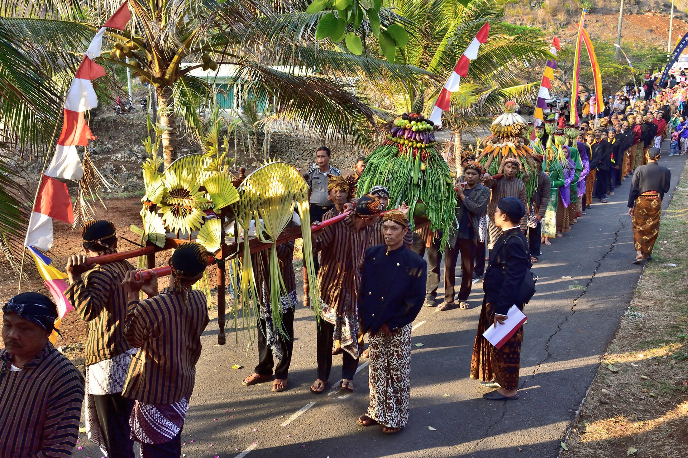

The culture of Indonesia has been shaped by long
interaction
between original
indigenous customs
and multiple foreign influences. Indonesia is centrally-located along ancient trading routes
between
the Far East, South Asia and the Middle East, resulting in many cultural practices being
strongly
influenced by a multitude of religions, including Buddhism, Christianity, Confucianism,
Hinduism,
and Islam, all strong in the major trading cities. The result is a complex cultural mixture,
often
different from the original indigenous cultures.
Examples of the fusion of Islam with Hinduism include Javanese Abangan belief. Balinese
dances
have
stories about ancient Buddhist and Hindu kingdoms, while Islamic art forms and architecture
are
present in Sumatra, especially in the Minangkabau and Aceh regions. Traditional art, music
and
sport
are combined in a martial art form called Pencak Silat.
The Western world has influenced Indonesia in science, technology and modern entertainment
such
as
television shows, film and music, as well as political system and issues. India has notably
influenced Indonesian songs and movies. A popular type of song is the Indian-rhythmical
dangdut,
which is often mixed with Arab and Malay folk music.
Despite the influences of foreign culture, some remote Indonesian regions still preserve
uniquely
indigenous culture. Indigenous ethnic groups Mentawai, Asmat, Dani, Dayak, Toraja and many
others
are still practising their ethnic rituals, customs and wearing traditional clothes.
National Dance
Indonesian dance reflects the diversity of culture from ethnic groups that composed the nation of Indonesia. Austronesian roots and Melanesian tribal dance forms are visible, and influences ranging from neighbouring Asian countries; such as India, China, and Middle East to European western styles through colonization. Each ethnic group has its own distinct dances; makes total dances in Indonesia are more than 3000 Indonesian original dances. However, the dances of Indonesia can be divided into three eras; the Prehistoric Era, the Hindu/Buddhist Era, and the Era of Islam, and into two genres; court dance and folk dance.
Architecture
For centuries, Indonesian vernacular architecture has shaped settlements in Indonesia which
commonly took the form of timber structures built on stilts dominated by a large roof. The most
dominant foreign influences on Indonesian architecture were Indian, although European influences
have been particularly strong since the 19th century and modern architecture in Indonesia is
international in scope.
s in much of Southeast Asia, traditional vernacular architecture in Indonesia is built on
stilts, with the significant exceptions of Java and Bali. Notable stilt houses are those of the
Dayak people in Borneo, the Rumah Gadang of the Minangkabau people in western Sumatra, the Rumah
Bolon of the Batak people in northern Sumatra, and the Tongkonan of the Toraja people in
Sulawesi. Oversized saddle roofs with large eaves, such as the homes of the Batak and the
tongkonan of Toraja, are often bigger than the house they shelter. The fronts of Torajan houses
are frequently decorated with buffalo horns, stacked one above another, as an indication of
status. The outside walls also frequently feature decorative reliefs.
Candi is an Indonesian term to refer to ancient temples. Before the rise of Islam, between the
5th to 15th-century Dharmic faiths (Hinduism and Buddhism) were the majority in the Indonesian
archipelago, especially in Java and Sumatra. As a result of numerous Hindu temples, locally
known as candi, constructed and dominated the landscape of Java.
National Dishes
The cuisine of indonesia has been influenced by Chinese culture and Indian culture, as well as by Western culture. However, in return, Indonesian cuisine has also contributed to the cuisines of neighbouring countries, notably Malaysia and Singapore, where Padang or Minangkabau cuisine from West Sumatra is very popular. Also, Satay (Sate in Indonesian), which originated from Java, Madura, and Sumatra, has gained popularity as a street vendor food from Singapore to Thailand. In the 15th century, both the Portuguese and Arab traders arrived in Indonesia with the intention of trading for pepper and other spices. During the colonial era, immigrants from many countries arrived in Indonesia and brought different cultures as well as cuisines.

Tourism
The Ministry of Tourism and Creative Economy introduced InDOnesia CARE, a symbol of support for
Indonesia’s strong effort in implementing the cleanliness, health, safety, and environment
protocols across the tourism industry as mandatory precautions. All to assure travelers that
InDOnesia CARE for your safety, health, hygiene and comfort.
Make sure to learn about all the immigration requirements that should be fulfilled before
visiting Indonesia, including e-passport and e-visa.
Find everything you need to know about how to get here, what regulations that should be noted,
and many other things vital in arranging your travel plan to Indonesia.
The Ministry of Tourism and Creative Economy introduced InDOnesia CARE, a symbol of support for
Indonesia’s strong effort in implementing the cleanliness, health, safety, and environment
protocols across the tourism industry as mandatory precautions. All to assure travelers that
InDOnesia CARE for your safety, health, hygiene and comfort.
Make sure to learn about all the immigration requirements that should be fulfilled before
visiting Indonesia, including e-passport and e-visa.
Find everything you need to know about how to get here, what regulations that should be noted,
and many other things vital in arranging your travel plan to Indonesia.The Ministry of Tourism
and Creative Economy introduced InDOnesia CARE, a symbol of support for
Indonesia’s strong effort in implementing the cleanliness, health, safety, and environment
protocols across the tourism industry as mandatory precautions. All to assure travelers that
InDOnesia CARE for your safety, health, hygiene and comfort.
Make sure to learn about all the immigration requirements that should be fulfilled before
visiting Indonesia, including e-passport and e-visa.
Find everything you need to know about how to get here, what regulations that should be noted,
and many other things vital in arranging your travel plan to Indonesia.

Religion
slam is Indonesia's main religion, with almost 88% of Indonesians declared Muslim according to the 2000 census,[53] making Indonesia the most populous Muslim-majority nation in the world. The remaining population is 9% Christian (of which roughly two-thirds are Protestant with the remainder mainly Catholic, and a large minority Charismatic), 2% Hindu, and 1% Buddhist. The Pancasila, the statement of two principles that encapsulate the ideology of the Indonesian state, affirms that "The state shall be based on the belief in the one and only God".